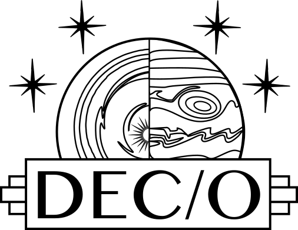
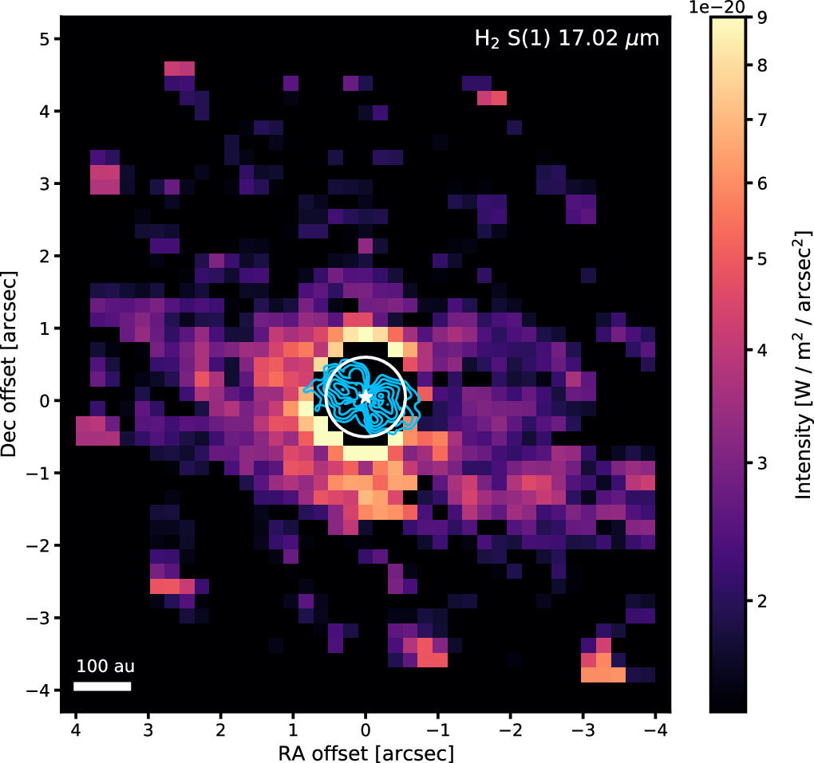
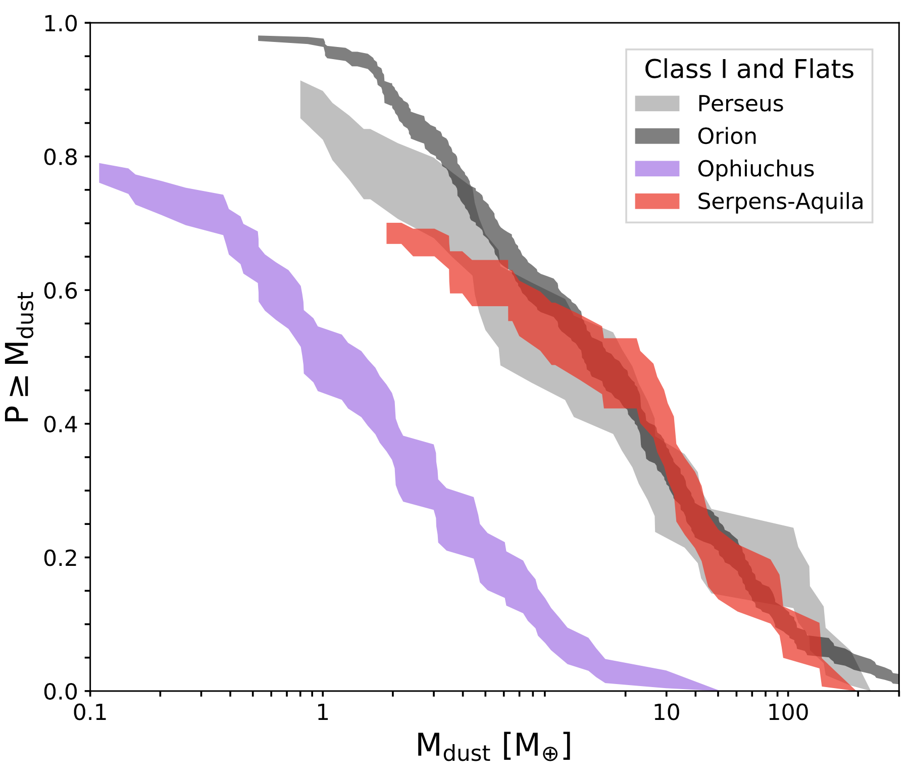
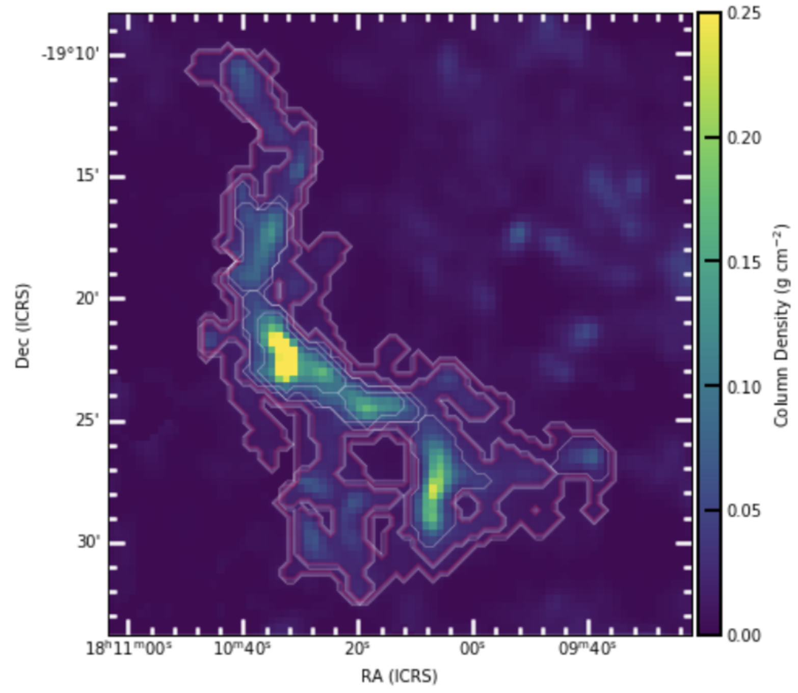

About Me
Background
Hi all! My name is Alexa Anderson, and I'm a sixth-year PhD candidate at the Institute for
Astronomy at the University of Hawai`i at Mānoa. Though I was born in Tokyo, Japan, I grew up in
the town of Kailua, Hawai`i. Later, I moved to New Haven to complete my undergraduate degree in
Astrophysics at Yale University. When I'm not doing astronomy, you can probably find me playing
board games or watching movies.
Education
M.S. Astronomy 2022, Institute for Astronomy, University of Hawai'i at Mānoa,
Honolulu, HI
B.S. Astrophysics 2020, Yale University, New Haven, CT
Research Interests
My primary research interest is planet formation from an observational perspective, particularly in the hot, inner, terrestrial planet-forming regions of
protoplanetary disks. I use high-resolution infrared spectroscopy from facilities like Keck-NIRSPAO and IRTF-iSHELL to resolve
spectral lines to interpret the kinematics and physical properties of planet-forming gas. I am especially interested in using
spectro-astrometry to probe emitting regions down to sub-au precision. I also synthesize my IR studies with those from ALMA and
JWST-MIRI to create a complete picture of gas dynamics from the inner- to outer-disk. In past projects, I've surveyed hundreds of protoplanetary
disks in Serpens with ALMA, as well as conducted in-depth multi-wavelength studies on single objects, like the T-Tauri star CX Tau.
Research
Infrared M-band Spectroscopy of Protoplanetary Disks
Advised by Dr. Jonathan Williams (IfA) & Committee: Dr. Adwin Boogert (IfA), Dr. Michael Liu (IfA), Dr. Gary Huss (UH) Dr. Geoff Blake (Caltech)

In the past decade, thousands of exoplanets have been discovered and characterized, spurring an effort to
understand how these planets form and how their birthplaces affect their properties. Infrared M-band (4.6 - 5.3 μm)
spectroscopy of protoplanetary disks traces the inner 10 au, or planet-forming regions. I am conducting a large (50+ object) study of
resolved CO lines in protoplanetary disks using primarily Keck-NIRSPAO to analyze inner disk kinematics and composition.
From line profile analyses, most disks have imprints of slow molecular winds in combination with Keplerian rotation.
I constructed rotation diagrams to find the temperature and column density of material. Finally, I utilized
spectro-astrometry to measure the centroid of emission as a function of wavelength and map emitting radii at sub-au scales.
I plan to synthesize this inner-disk information with data from ALMA and JWST-MIRI through my membership in the
Disk Exoplanet C/Onnection (DECO) team to get a fully complete picture of disk gas dynamics.
Photoevaporation in the Compact Dust Disk around CX Tau

I have already shown the power of multi-wavelength data in studying the protoplanetary disk CX Tau. CO line
profiles indicative of a wind were seen with Keck, and line maps from ALMA of CO and from JWST of H2 and [Ne II]
supported my interpretation of a wind, which was unexplained by JWST-only analyses. I determined that the mass
loss rate due to a photoevaporative wind was approximately equal to the accretion rate, indicating that CX Tau
was in the rare evolutionary stage of inside-out clearing. More information is available in
the paper.
Protostellar and Protoplanetary Disk Masses in the Serpens Region
Advised by Dr. Jonathan Williams, IfA

To differentiate between the effects of
clustering and photoevaporation from typical protoplanetary disk evolution, I led a demographic survey of 320 disks in
Serpens, a star forming region with no massive stars and a high stellar density. Using 1" resolution data of the 1.3 mm
dust continuum and 12CO isotopologue, my work found that Serpens does not
differ significantly from other star-forming regions of a similar age, hinting that clustering and photoevaporation may not
have a strong impact on disk lifetimes and evolution. Additionally, I catalogued fifteen protostellar outflows in 12CO and
identified a candidate Class 0 source embedded deeper within the Serpens cloud. To see more, visit
the paper.
A Multi-Wavelength Investigation of the Dynamic Inner Protoplanetary Disk of EP Cha
Advised by Dr. Eric Gaidos, IfA
"Dippers," are young variable stars that display dimming events on the timescales of hours to days due to occultation of circumstellar dust.
For the dipper EP Cha, I used Swift XRT data and XSPEC solar corona plasma modeling to estimate gas column density
during and outside of occulting events, determining that dimming and gas column density were correlated. I calculated accretion
rates and also developed an infrared photometry pipeline for use with the Rapid
Eye Mount Telescope. After constructing multi-band light curves, I determined that color variability
is most likely due to accretion rather than dust-induced reddening.
Using Dark Clouds to Understand Distant Galaxies
Advised by Dr. Jens Kauffmann & Dr. Hector Arce, MIT Haystack Observatory & Yale University, NSF REU & STARS II Fellow

Star formation rates in dark molecular clouds are often related to gas mass above a certain density threshold. My work found
that this relation didn't hold for the molecule HCN between clouds or within the cloud IC5146, indicating
star formation estimates using this relation alone may be more uncertain than their quoted error bars.
Mapping Protostellar Outflows in Perseus
Advised by Dr. Hector Arce, Yale University
I created moment 0 and contour maps from data cubes to identify protostellar outflows and morphologies in several
different molecular species.
Satellite Galaxy Evolution in Colorspace
Advised by Dr. Marla Geha, Yale University, Science, Technology, and Research (STARS) Summer Fellow
I studied
the evolution of satellite galaxies in the summer of 2017. Using Flexible Stellar Population Synthesis modeling code, I analyzed how
the colors of satellite galaxies in the Satellites Around Galactic Analogs (SAGA) Survey would change over time. I presented my work
at the
STARS Summer Symposium .
Contact
Email: alexaand@hawaii.edu
Office: B-101, Institute for Astronomy, Mānoa Campus